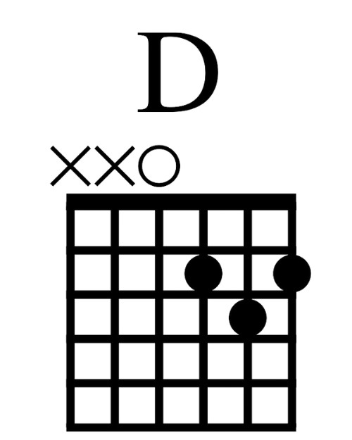

What it all means...
This chart represents the fret board as if you were holding right in front of your face. The darker line on the top of this diagram represents what we call the "nut". This is similar to the bridge at the other end of the guitar (where the soundhole is), but the nut is the other end of the neck farthest from the body of the guitar which connects to what is called the "head" (which is where the tuning machines are located.)
The horizontal lines represent the six guitar strings, lowest note strings to the left, highest pitch string to the right. The frets are the horizontal lines, and are numbered starting from the nut to fret#1, and this chart goes up to fret#5. You can see once you know your way around a little just how simple and direct a representation this is. You don't really need to know anything about music to be able to look at a chart such as this and figure out how to place your fingers to make a chord!
This chart represents the fret board as if you were holding right in front of your face. The darker line on the top of this diagram represents what we call the "nut". This is similar to the bridge at the other end of the guitar (where the soundhole is), but the nut is the other end of the neck farthest from the body of the guitar which connects to what is called the "head" (which is where the tuning machines are located.)
The horizontal lines represent the six guitar strings, lowest note strings to the left, highest pitch string to the right. The frets are the horizontal lines, and are numbered starting from the nut to fret#1, and this chart goes up to fret#5. You can see once you know your way around a little just how simple and direct a representation this is. You don't really need to know anything about music to be able to look at a chart such as this and figure out how to place your fingers to make a chord!